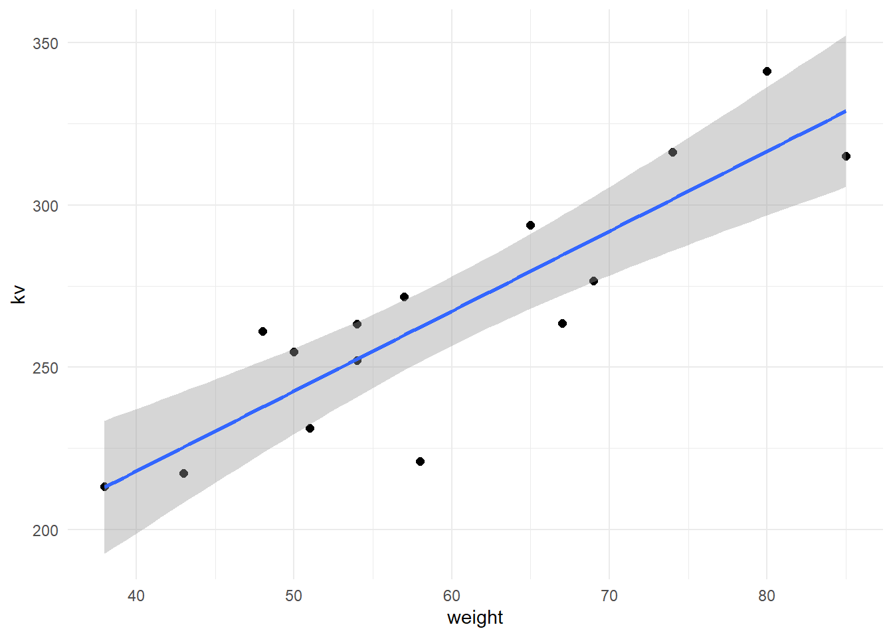

15 双变量回归与相关
在R语言里实现非常简单，上文也介绍过使用rstatix进行相关分析。
15.1 两样本相关
使用课本例9-5的数据。
df <- data.frame(
weight = c(43,74,51,58,50,65,54,57,67,69,80,48,38,85,54),
kv = c(217.22,316.18,231.11,220.96,254.70,293.84,263.28,271.73,263.46,
276.53,341.15,261.00,213.20,315.12,252.08)
)
str(df)
## 'data.frame': 15 obs. of 2 variables:
## $ weight: num 43 74 51 58 50 65 54 57 67 69 ...
## $ kv : num 217 316 231 221 255 ...两变量是否有关联？其方向和密切程度如何？
cor.test(~ weight + kv, data = df)
##
## Pearson's product-moment correlation
##
## data: weight and kv
## t = 6.5304, df = 13, p-value = 1.911e-05
## alternative hypothesis: true correlation is not equal to 0
## 95 percent confidence interval:
## 0.6584522 0.9580540
## sample estimates:
## cor
## 0.8754315从结果可以看出，两者是正相关，相关系数r = 0.8754，且p痔小于0.05，具有统计学意义！
可视化结果：
library(ggplot2)
## Warning: package 'ggplot2' was built under R version 4.2.3
ggplot(df, aes(weight, kv)) +
geom_point(size = 2) +
geom_smooth(method = "lm") +
theme_minimal()
## `geom_smooth()` using formula = 'y ~ x'
相关性分析的过程比较简单，在选择方法时要注意是使用pearson相关还是秩相关。